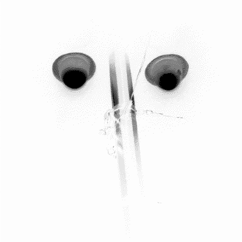
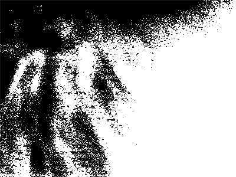

2026-03-20
Тает снег. Неторопливо оживают деревья. Возвращаются птицы. Весна.
Благодаря сильному переутомлению, как ни странно, смог полностью восстановиться от работы и ощущить, каково жить с ясной головой. Это родило несколько последствий.
Первое и самое серьёзное – домашний компьютер больше отвращает, чем привлекает. С ними прикольно взаимодействовать в рамках работы и серьёзных вычислений/коммутаций, которые трудно провернуть своими силами. Но не более того.
Второе – реальность оказалась куда интереснее плоской виртульности. От банальной прогулки без ничего чувствуешь свободу, которую хочется расширять и углублять.
- полностью переработал вид сайта и убрал ненужные элементы. Пусть растёт естественно, неторопливо.

2025-07-??
Это был прекрасный, искренний месяц.
Вернулась беспричинная радость! Именно она зажгла ощущение счастья, давным-давно погасшее. А вместе с ней куда-то пропала тревога и неуверенность; этот дуэт долго ступал мне на пятки, всё время торопил куда-то и метал из стороны в сторону.
Появилось бесконечно сильное желание творить, в любом направлении. Как будто сняли тяжкий груз из ограничений и причин не делать этого, когда-то сжимавший глубокие порывы.
Вокруг творятся перемены, творят жизнь. И созерцать это – счастье.
